The Lightning Thief
CLICK A CHAPTER NUMBER TO START READING
The Lightning Thief follows twelve-year-old Percy Jackson as he discovers the world of Greek mythology is real—and dangerously tangled up with his life—when he’s suddenly accused in a divine crisis and forced into a cross-country quest with new allies, racing monsters and time itself to clear his name and keep the gods from turning on each other.
I ACCIDENTALLY VAPORIZE MY PRE-ALGEBRA TEACHER
Percy Jackson warns readers not to dig too deep into the truth about half-bloods, then introduces himself as a twelve-year-old trouble magnet at Yancy Academy, a boarding school in upstate New York.

He flashes back to last May, when his sixth-grade class piled onto a yellow bus for a field trip to the Metropolitan Museum of Art in Manhattan, hoping—against all odds—this one won’t end in disaster.

Percy’s only real comfort is Mr. Brunner, the Latin teacher in a motorized wheelchair, who’s oddly cool and makes Greek and Roman history feel alive. Percy’s determined to stay out of trouble this time.

On the ride into the city, Percy bites his tongue while Nancy Bobofit pelts his best friend Grover with chunks of peanut-butter-and-ketchup sandwich. Grover tries to keep Percy calm, reminding him he’s already on probation.

At the museum, Mr. Brunner leads them through echoing galleries of statues and ancient pottery, stopping at a tall stone column topped with a sphinx. Percy tries to listen, but the noise of his class keeps pulling him into trouble—especially under Mrs. Dodds’s watchful glare.
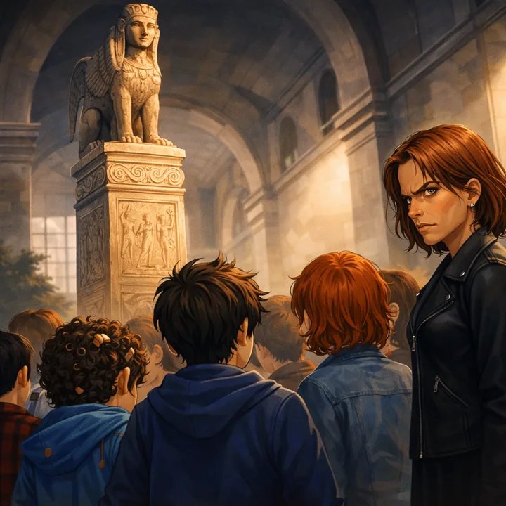When Nancy makes a crude joke, Percy snaps at her a little too loud, and Mr. Brunner puts him on the spot with questions about a carving. Percy manages to explain the myth of Kronos, but he can’t answer why it matters in real life.
After lunch is announced, Mr. Brunner pulls Percy aside and tells him he needs to understand why what he’s learning is important, pushing him harder than any teacher ever has. Percy walks away frustrated, feeling like he can’t live up to expectations.
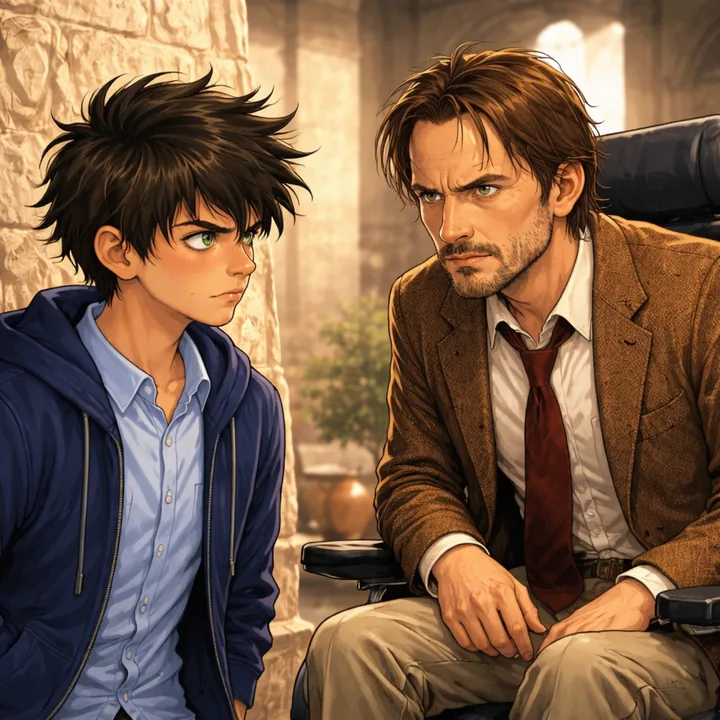Outside on the museum steps, Percy notices an unnaturally dark storm building over the city while everyone else acts like it’s normal. He sits by a fountain with Grover, wishing he could just go home instead of waiting for the next punishment.
Nancy marches over and dumps her half-eaten lunch into Grover’s lap, and Percy’s temper finally snaps. In the next instant, Nancy is splashing in the fountain, screaming that Percy pushed her—while other kids swear the water itself seemed to grab her.
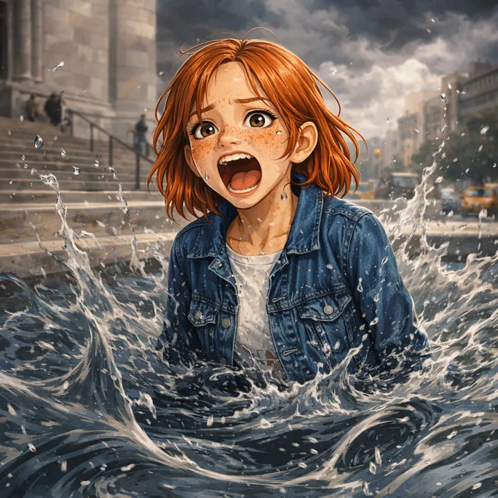Mrs. Dodds appears instantly, thrilled to have Percy in her sights, and orders him to come with her despite Grover desperately trying to take the blame. Percy follows, unsettled by how she keeps reappearing impossibly far ahead, like reality is skipping.
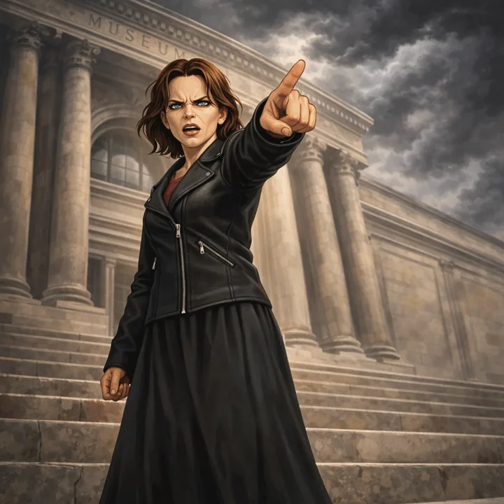She leads Percy deep into an empty Greek gallery, stopping in front of a marble frieze of the gods, her voice low and threatening. She accuses him like she’s been hunting him, demanding he confess to something Percy doesn’t even understand.

Thunder shakes the building as Mrs. Dodds transforms—eyes blazing, fingers turning to claws, leather jacket melting into wings—revealing a shriveled, fanged monster ready to tear Percy apart. Percy can barely move, trapped between panic and disbelief.
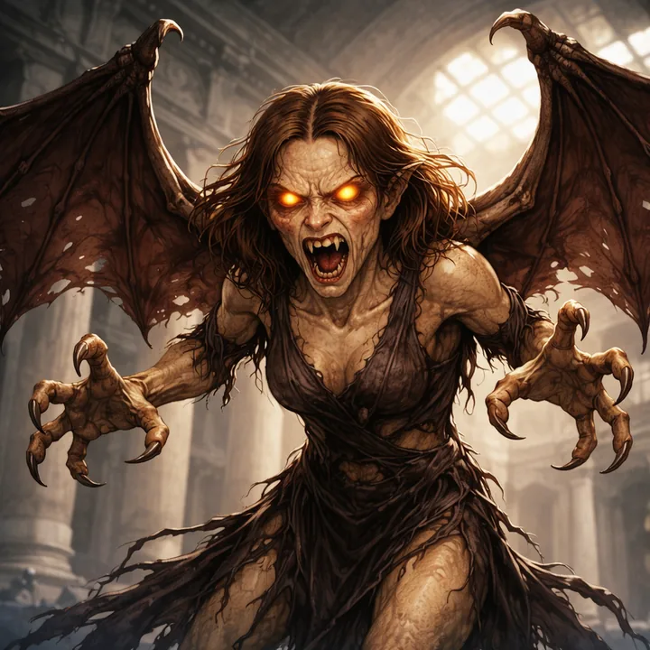Mr. Brunner suddenly bursts into the doorway and throws Percy a pen, shouting like it’s a drill. Percy catches it, and it becomes a bronze sword in his hands just as the monster lunges.
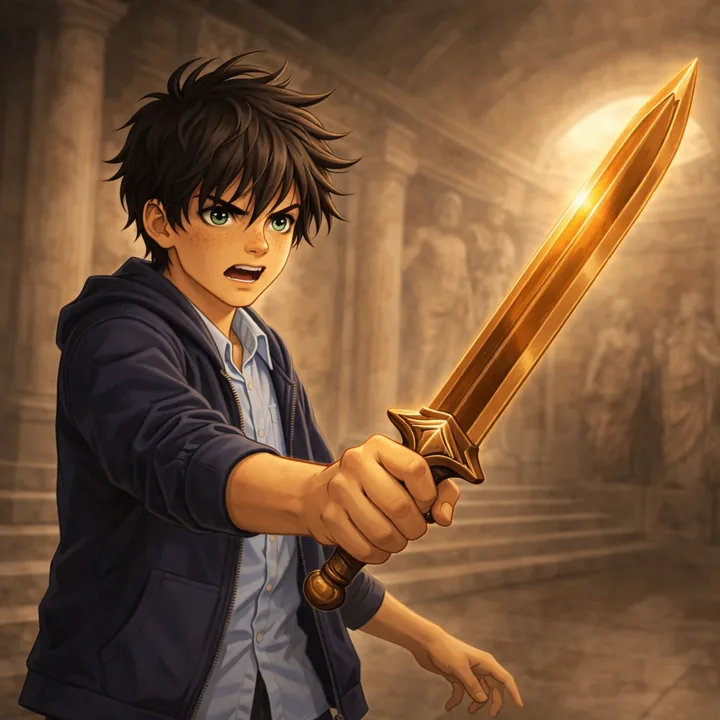With no time to think, Percy swings the sword in pure instinct, and the blade slices through Mrs. Dodds like she’s made of water. She disintegrates into yellow powder with a sulfurous screech, leaving Percy trembling and suddenly alone.
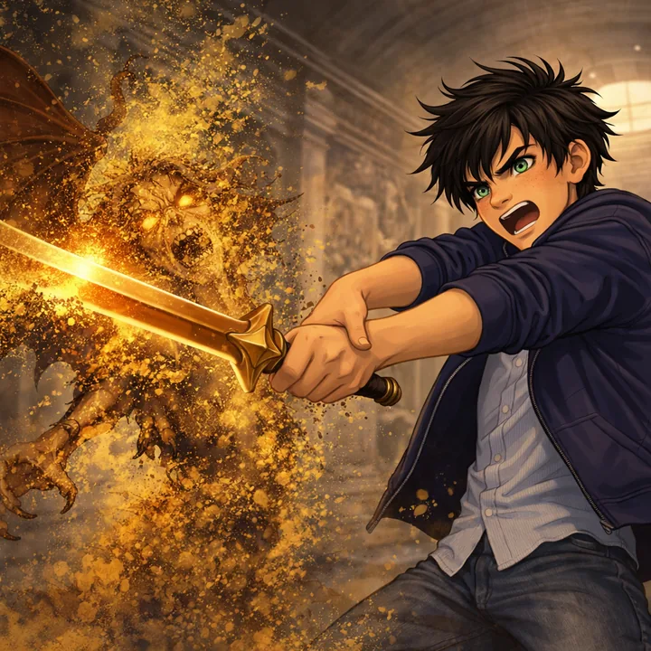In the blink of an eye, the gallery is normal again—no monster, no teacher—just Percy holding an ordinary ballpoint pen. He stumbles outside into the rain, half-convinced he hallucinated the whole thing.
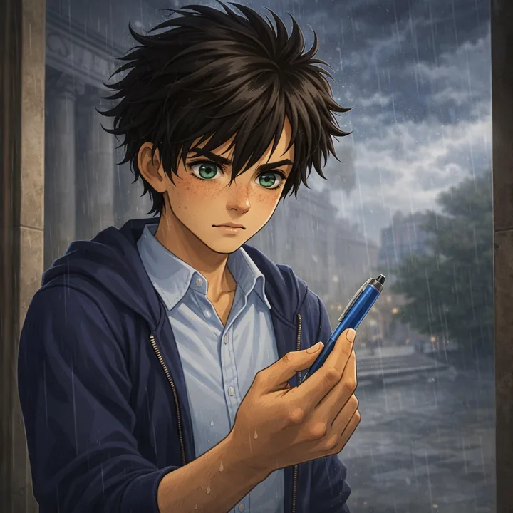Back by the fountain, Nancy is still soaked and insults Percy, but calls their chaperone “Mrs. Kerr,” acting like Mrs. Dodds never existed. Grover also pretends not to know the name, and even Mr. Brunner calmly insists there has never been a Mrs. Dodds at Yancy—or on the trip.
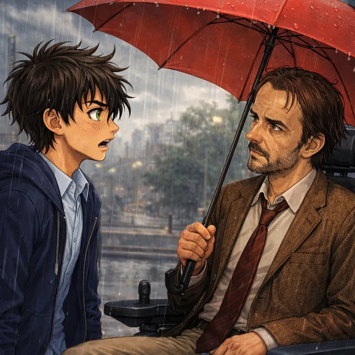THREE OLD LADIES KNIT THE SOCKS OF DEATH
After the museum incident, Percy can’t shake the feeling that reality has been rewritten. Everyone at Yancy insists Mrs. Kerr—a cheerful blond Percy swears he’s never met—has been the pre-algebra teacher since Christmas, and every “Mrs. Dodds” reference earns him blank stares.
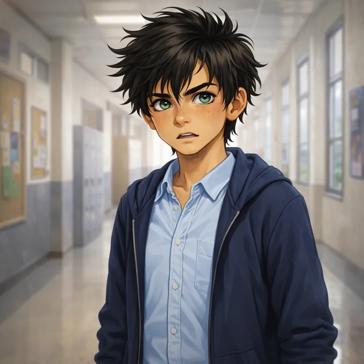Grover’s reactions are the only crack in the act—he always hesitates before denying Mrs. Dodds, like he’s forcing the lie out. At night, Percy keeps jolting awake, seeing wings and talons in his nightmares.
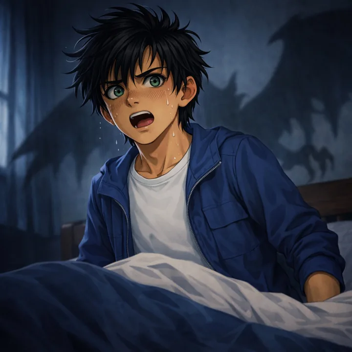The weather stays violent and unnatural, rattling Percy’s nerves even more—storms, tornado reports, freak squalls in the news. As everything feels more wrong, Percy gets angrier, fights more, and his grades slide fast.
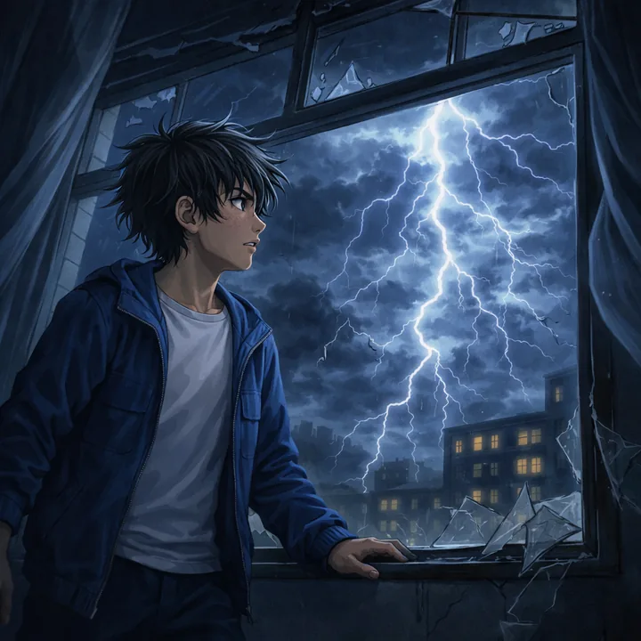Eventually Percy explodes in English class, insults Mr. Nicoll, and seals his fate. A letter goes home, and the school makes it official: he won’t be coming back next year.
Even though he’s homesick and wants his mom, Percy realizes there are things he’ll miss—Grover, the woods and river views, and especially Mr. Brunner’s Latin class. With exams closing in, Latin becomes the one subject he tries to study, because Brunner’s “life-and-death” warning keeps echoing in his head.
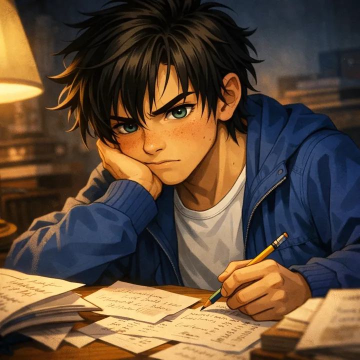The night before the final, frustration boils over—Percy hurls his mythology book across the room as the words seem to twist and spin off the page. After pacing like his skin is crawling, he forces himself to pick the book back up and decides to ask Mr. Brunner for help.
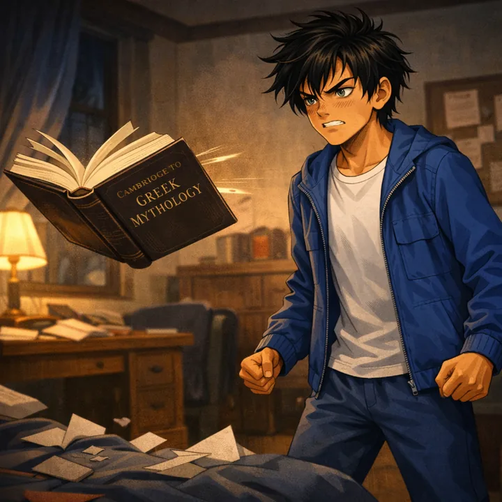Down in the dim faculty hallway, Mr. Brunner’s office is the only one with light spilling out. Percy stops short when he hears Brunner and Grover talking about him—worried voices, strange phrases, and the chilling idea that something is watching Percy already.

Percy hears enough to make his stomach drop: “Kindly One,” “the Mist,” “keep Percy alive,” and a “summer solstice deadline.” Then his book thuds to the floor, and silence hits like a trap snapping shut.
A shadow slides across the frosted glass—taller than Mr. Brunner’s wheelchair, holding something shaped like a bow. Percy ducks into the nearest room and waits, hearing slow clopping footsteps and an animal-like snuffle right outside his door.
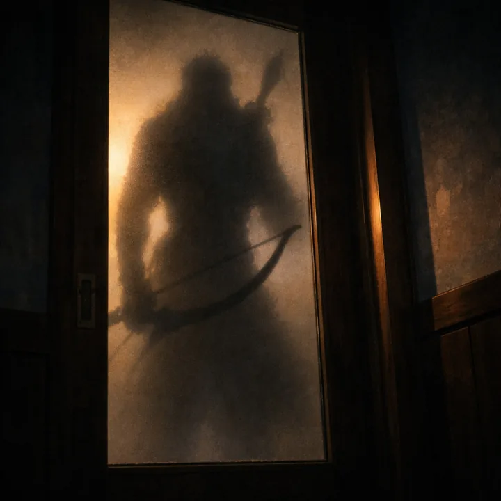Eventually the hallway calms; Brunner dismisses Grover back to the dorm, the office lights click off, and Percy finally slips away. When he returns, Grover is in bed acting normal, as if he never left—studying like he’s been there all night.
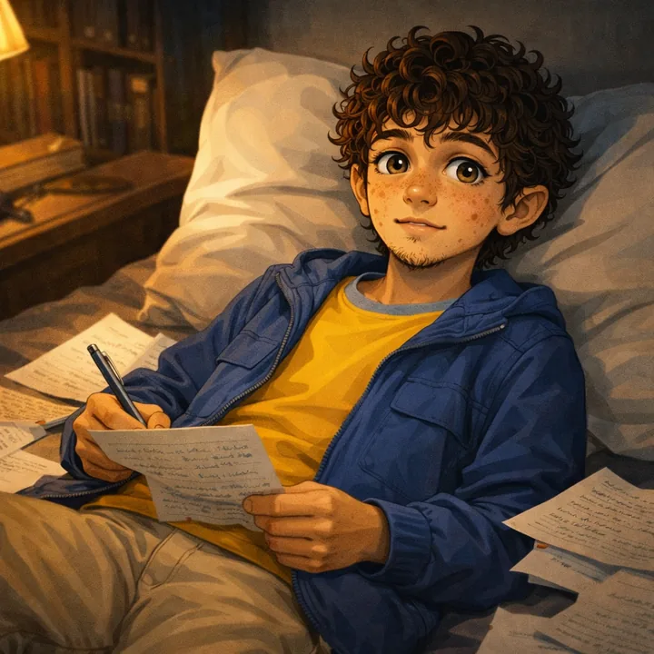Percy tries to play it off, but inside he’s rattled—Grover and Mr. Brunner have been hiding something, and they think Percy is in real danger. He goes to sleep not believing any of it, yet unable to forget a word.
After the brutal three-hour Latin exam, Mr. Brunner stops Percy and speaks gently about him leaving Yancy, saying it’s for the best and that this place was never right for him. Percy hears it like rejection, especially with Nancy smirking nearby, and he storms out before Brunner can explain.
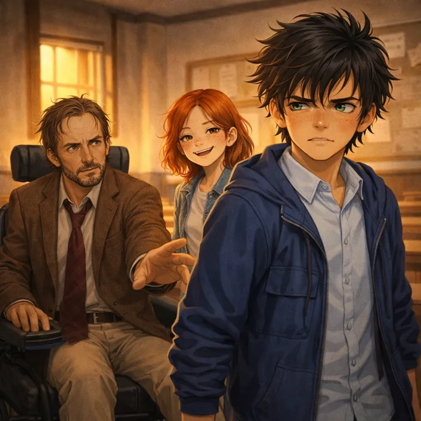On the last day, Percy packs while rich kids brag about their vacations, barely noticing him when he says he’s heading back to the city. The one goodbye he dreads—Grover—doesn’t happen, because Grover is getting on the same Greyhound to Manhattan.
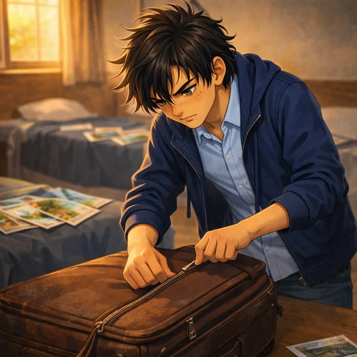During the ride, Grover keeps scanning the aisle like he expects trouble, and Percy finally confronts him with what he overheard. Grover panics, tries to lie it away, but he’s so bad at it that Percy pushes harder.
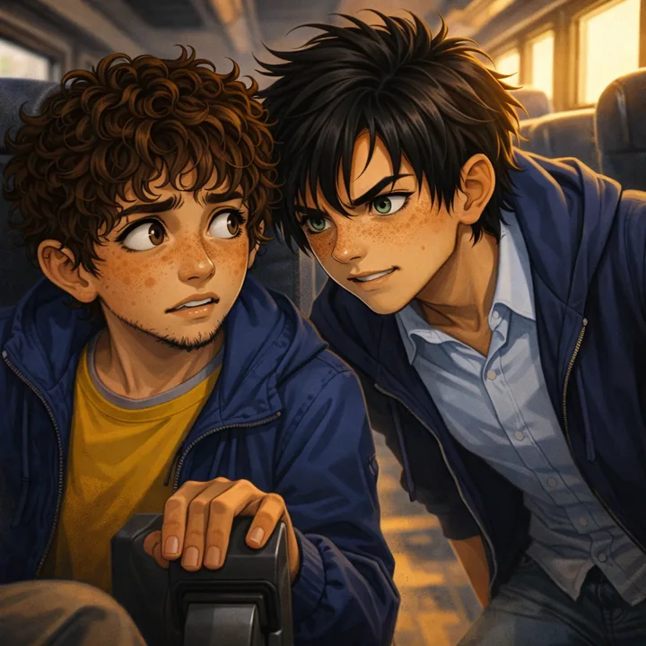Grover ends up handing Percy a grimy business card with strange words—“Keeper” and “Half-Blood Hill”—and begs him not to say the name out loud. Percy’s mood twists from confusion to hurt, thinking Grover has some secret rich summer life he never mentioned.
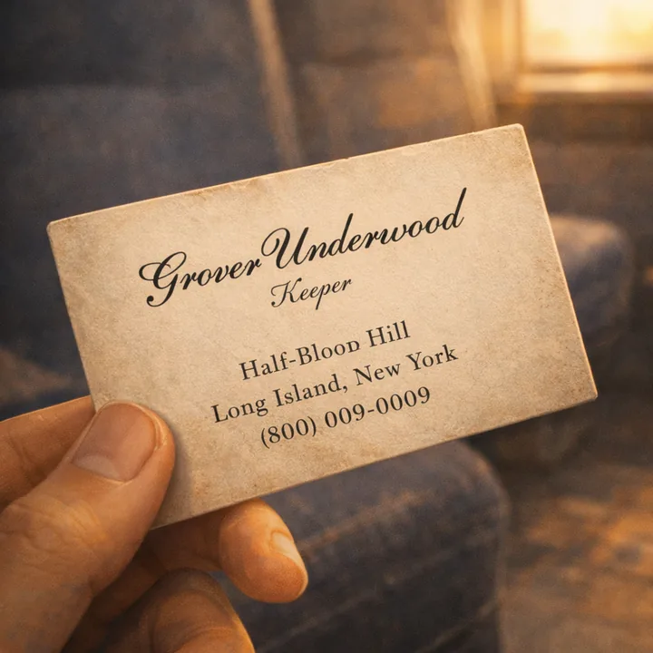Then Grover blurts out something even stranger: he has to protect Percy. Percy is about to demand what that even means when the bus shudders, black smoke pours from the dashboard, and a rotten-egg stench fills the air.

Everyone gets off on a lonely stretch of highway, heat shimmering off the asphalt. Across the road sits a quaint fruit stand—bright cherries and cider in ice—but three ancient women in rocking chairs sit knitting gigantic electric-blue socks and staring directly at Percy.
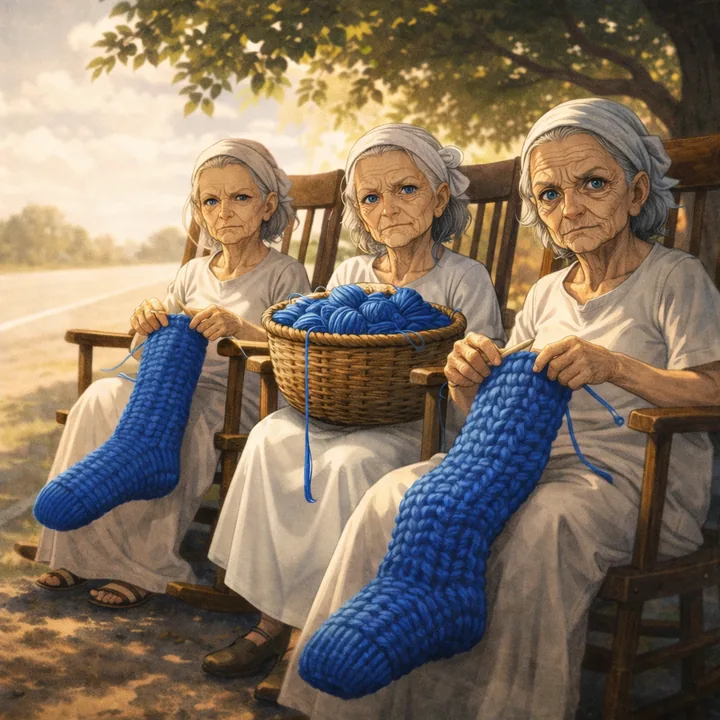Grover turns ghost-pale and begs Percy to get back on the bus immediately. Percy hesitates, watching as the middle woman lifts huge scissors and snips the yarn with a sound that feels louder than it should.
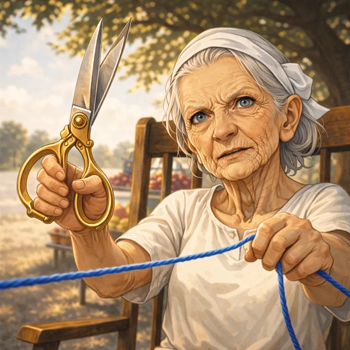The driver manages to restart the bus, everyone cheers, and they climb back on—but the relief doesn’t last. As the Greyhound rolls away, Percy feels feverish, and Grover starts shivering like he’s freezing in the heat.
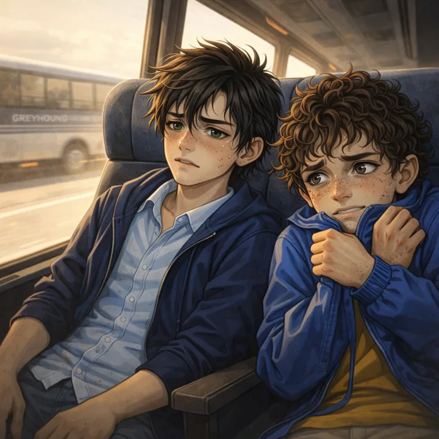Percy tells Grover exactly what he saw—the scissors cutting the yarn—and Grover reacts like it’s a death sentence. He mutters about sixth graders never making it past sixth grade, like he’s seen this happen before.
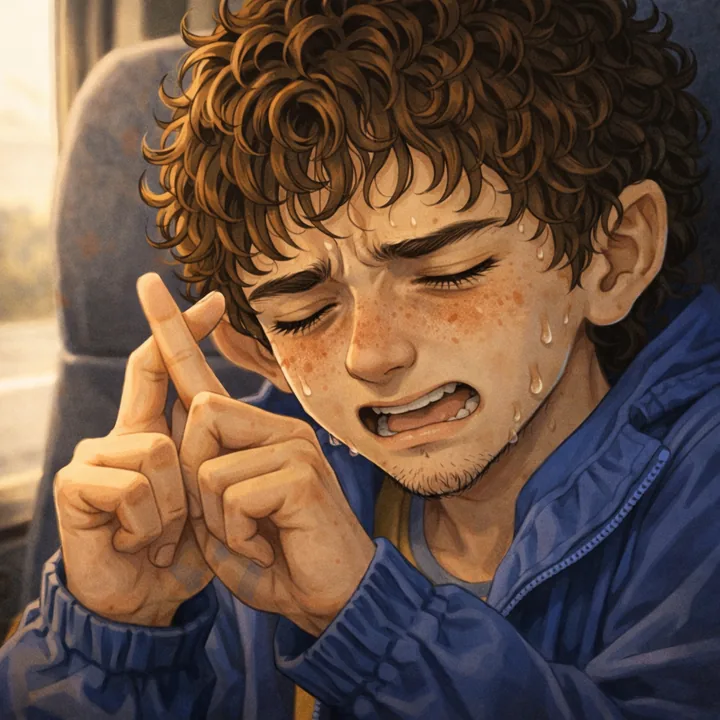Grover begs to walk Percy home from the bus station and won’t explain why. When Percy finally asks the obvious—does the snipping mean someone’s going to die—Grover looks at him with a grief so heavy it feels like Percy’s funeral has already been planned.
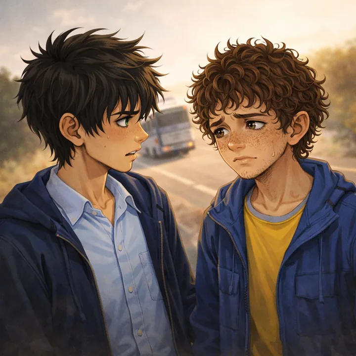GROVER UNEXPECTEDLY LOSES HIS PANTS
The second Percy and Grover hit the bus terminal, Percy bails. Grover bolts for the restroom, and Percy grabs his suitcase, slips outside, and jumps into a taxi straight for his mom’s apartment.
On the ride uptown, Percy thinks about his mother, Sally Jackson—kind, stubborn, and endlessly unlucky, yet somehow still the best person he knows. Her past is a mess of losses and bad breaks, and Percy’s always felt like he’s been one more hard thing she had to carry.
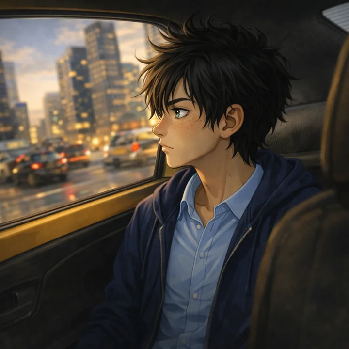He remembers what she’s told him about his father: a secret relationship, a man who left on an “important journey” across the Atlantic and never returned. Sally never calls him dead—just “lost at sea”—and she keeps no pictures, like even looking would hurt too much.
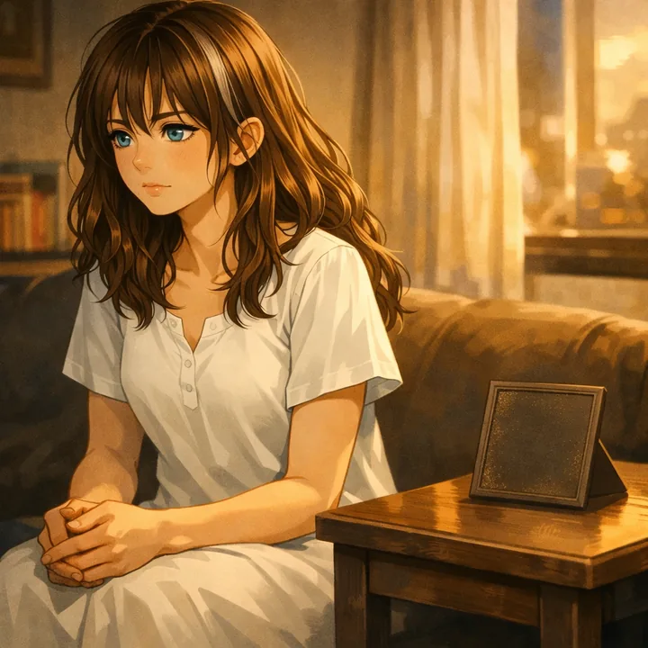Eventually, Sally married Gabe Ugliano, who turned out to be a loud, selfish slob almost immediately. Percy’s nickname for him—Smelly Gabe—fits so well it’s hard to forget.
When Percy walks into the apartment, it’s poker night: ESPN blasting, chips and cans everywhere, Gabe and his buddies barely acknowledging Percy’s return. Gabe immediately demands cash and starts sniffing out Percy’s taxi change like it’s owed to him.
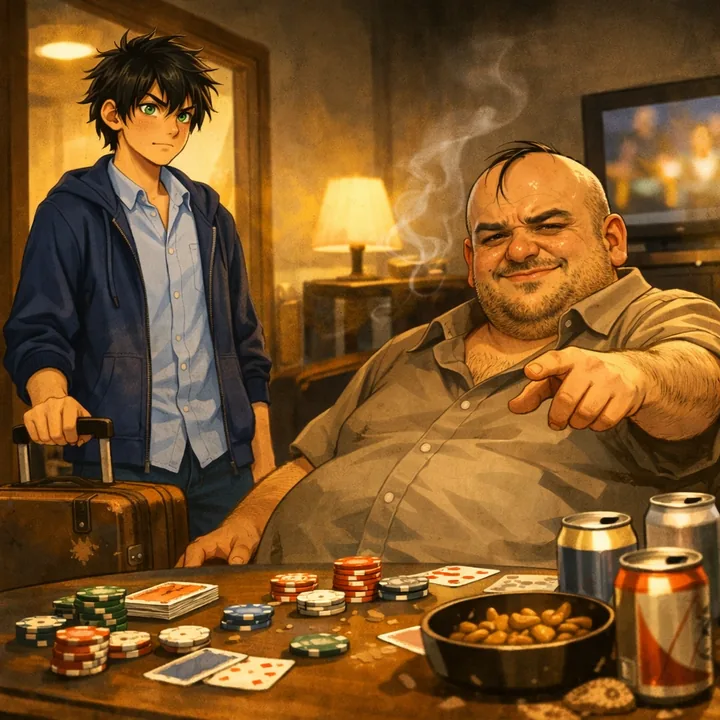Percy throws the money down just to end it, and Gabe shouts after him about his report card like it’s entertainment for the room. Percy retreats into the “study” that becomes his room only when he’s home, reeking of boots, cigars, and stale beer.
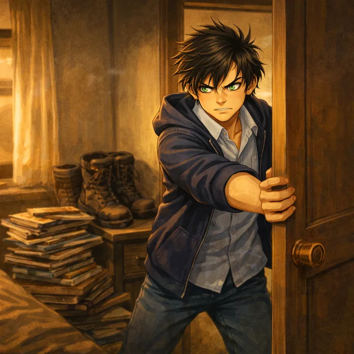For a second, Percy’s fear comes rushing back—Grover’s panic, the snipping scissors, the feeling that something might be climbing the stairs right now. Then he hears the one voice that makes the dread melt instantly: “Percy?”
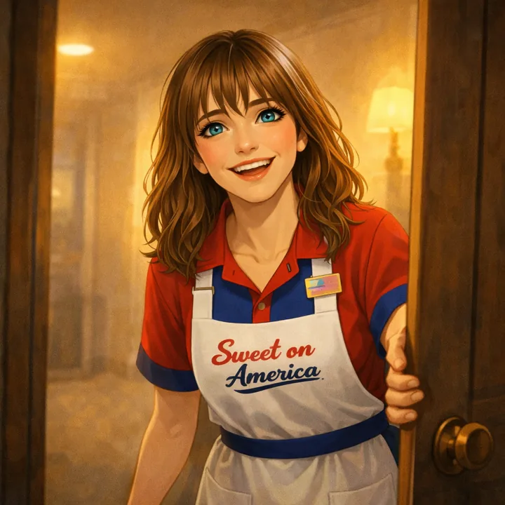His mom pulls him into a hug, smelling like candy shop sweetness, and hands over a bag of “free samples” like she always does. Sitting together on the bed, she fusses over him and asks what he hasn’t said in his letters, caring more about whether he’s okay than about school rules.
From the living room, Gabe barks for bean dip, and Percy forces himself to stay polite for his mom’s sake. He spins his year at Yancy as “not so bad,” almost convincing himself—until the museum trip creeps back into his thoughts and his mom catches the shift in his face.
Sally doesn’t push, but she surprises him with a plan: Montauk—three nights, the same cabin. Percy lights up, because it’s their place, their tradition, and it’s been kept off-limits for two summers.
Gabe tries to bulldoze the plan, but Sally handles him with careful calm, bargaining with food and promises until he grudgingly allows it. Percy swallows his fury and mutters an apology just to keep the peace long enough to escape.
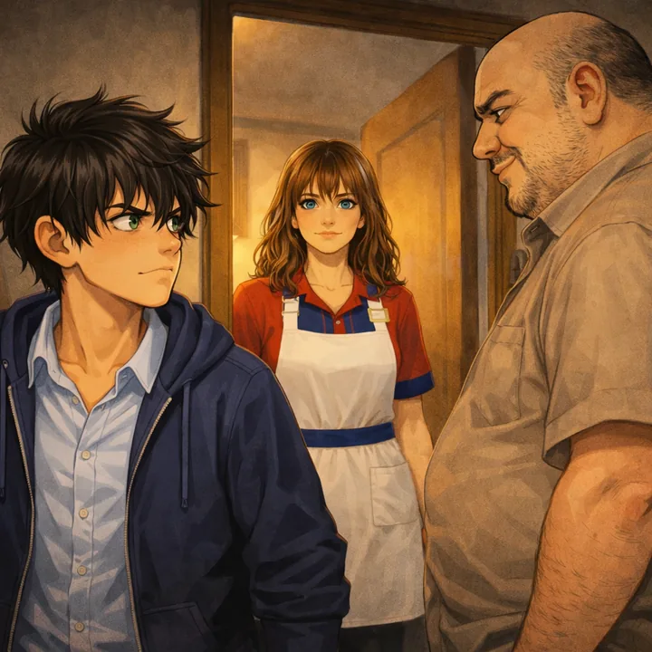When they finally load the Camaro, Gabe keeps barking threats about scratches and blame. Percy, boiling with anger, copies the strange warding gesture he once saw Grover make—and the screen door slams hard enough to knock Gabe up the stairs like he’s been shoved by invisible hands.
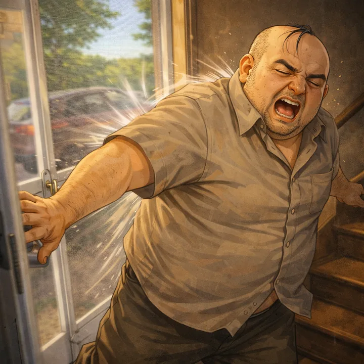They drive out to Montauk, to the little pastel cabin half-sunk in dunes, sand in everything, spiders in the cupboards, and the sea always colder than it looks. Percy loves it anyway, because it’s tied to every good memory he has with his mom—and to the place she met his dad.
As they settle in, Sally seems younger, lighter, like the beach is returning something to her. They clean the cabin, walk the shore, feed seagulls blue corn chips, and eat the blue candy she brings—her quiet rebellion against Gabe.
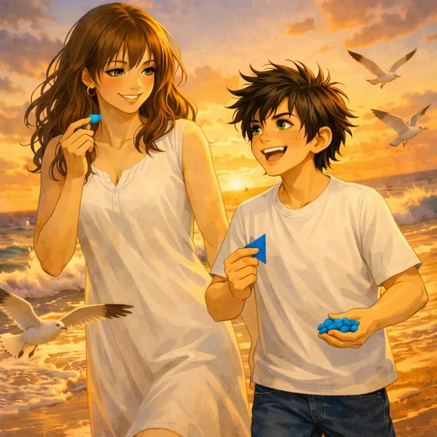That night by the fire, Sally tells stories about her childhood and her dream of becoming a writer, and Percy finally asks again about his father. She describes him as kind and powerful, and says Percy has his hair and eyes—then drops the detail that hits hardest: his father left before Percy was born, and never even saw him.
Percy’s hurt twists into anger, and it spills into a new fear: will his mom send him away again to another school? Sally hesitates, then admits she may have to send him somewhere else—not a school, but a summer camp his father wanted, a place she can barely say out loud.
When Percy presses, Sally’s words turn heavy—sending him there could mean saying goodbye “for good.” Percy senses she’s terrified, and he chooses not to ruin the trip by telling her about Mrs. Dodds and the fruit-stand women.

That night Percy dreams of a violent storm on the beach where a white horse and a golden eagle tear at each other at the surf’s edge. Beneath their fight, the ground rumbles and a monstrous voice laughs, pushing them to be more brutal.
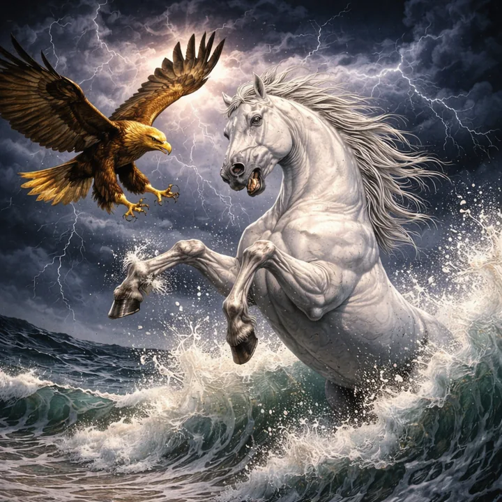He wakes to a real storm—worse than normal—lightning turning the cabin into flickering daylight and massive waves pounding the dunes. Sally bolts upright and calls it a hurricane, and Percy hears a distant, tortured bellow that makes his skin crawl.
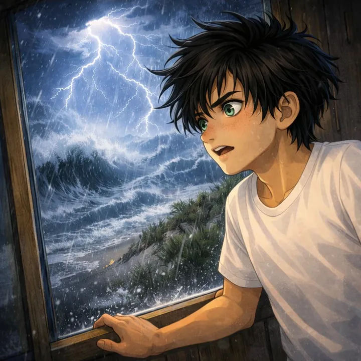Then comes frantic pounding at the cabin door, and Sally throws it open to find Grover drenched in rain, gasping like he’s been running for hours. His voice is panicked, and Sally’s fear spikes instantly—not at Grover, but at what his presence means.
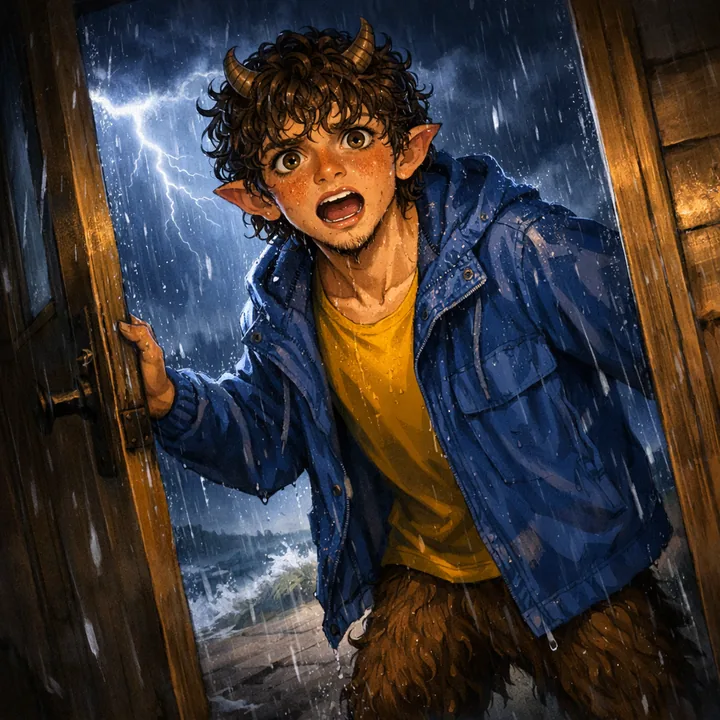Grover shouts in Ancient Greek—words Percy somehow understands—and screams that something is right behind him. Sally snaps at Percy with a sternness he’s never heard, demanding the truth, and Percy blurts out everything: the old women, the scissors, Mrs. Dodds.
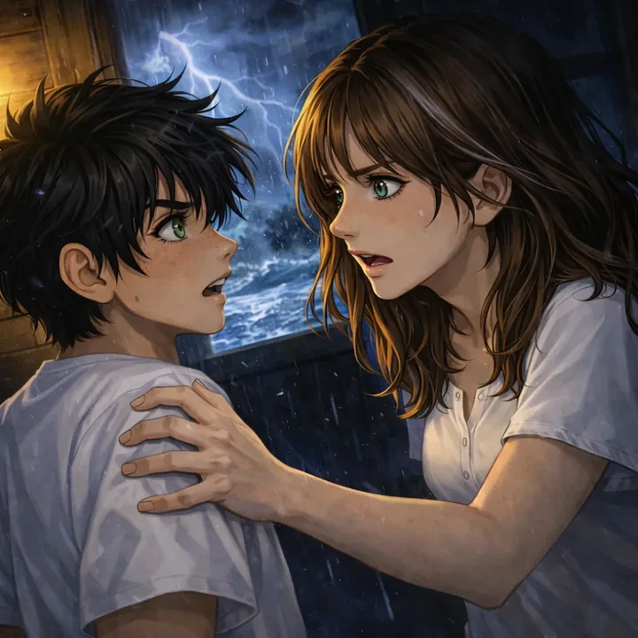Sally grabs her purse, throws Percy his rain jacket, and orders them to the car immediately. Grover takes off toward the Camaro—and in the lightning, Percy finally sees what’s been wrong all along: Grover doesn’t have human legs.
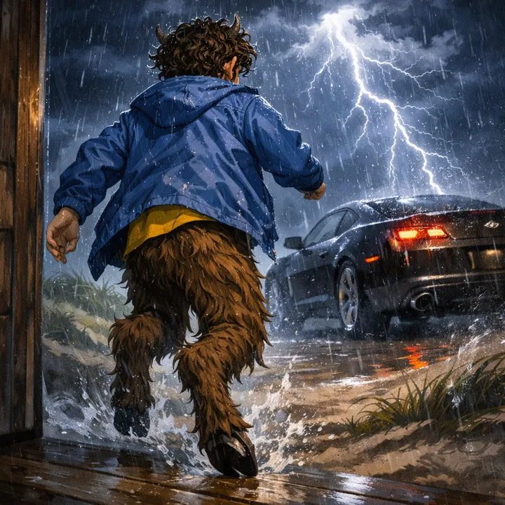MY MOTHER TEACHES ME BULLFIGHTING
Percy, Sally, and Grover tear down dark Long Island roads in the Camaro while the storm tries to rip the car apart. In the backseat, Percy keeps catching flashes of Grover’s shaggy legs and smelling wet wool, forcing himself to accept this isn’t some trick.
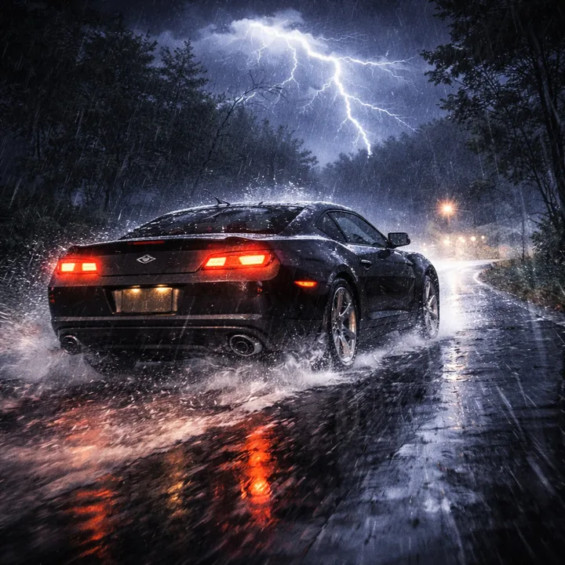Percy demands answers, and Grover—irritated and panicky—finally admits what he is: a satyr, goat from the waist down. He also admits Mrs. Dodds was real, and says the “Mist” was used to make everyone else forget, because knowing the truth attracts monsters.
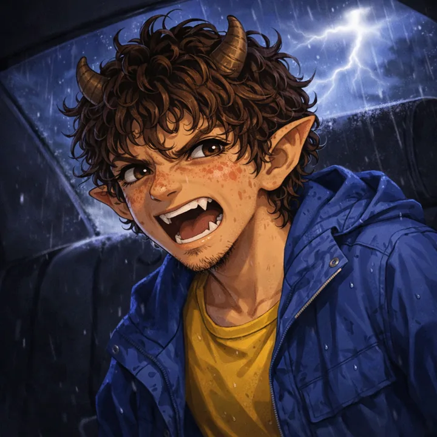A deep bellow rises behind them, closer than before, and Sally keeps driving like she’s racing a nightmare. Grover blurts that what’s after Percy isn’t “nobody”—it’s the Lord of the Dead’s forces.
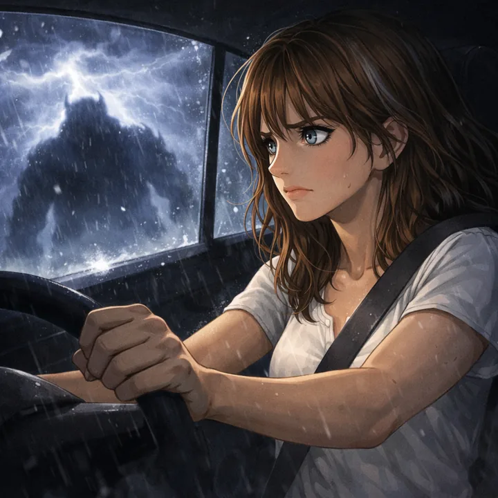They veer onto a narrow road past farmhouses and strawberry-picking signs as Sally says they’re heading to the summer camp Percy’s father wanted. She’s trying not to sound terrified, but her voice keeps tightening every time that bellow rolls through the storm.
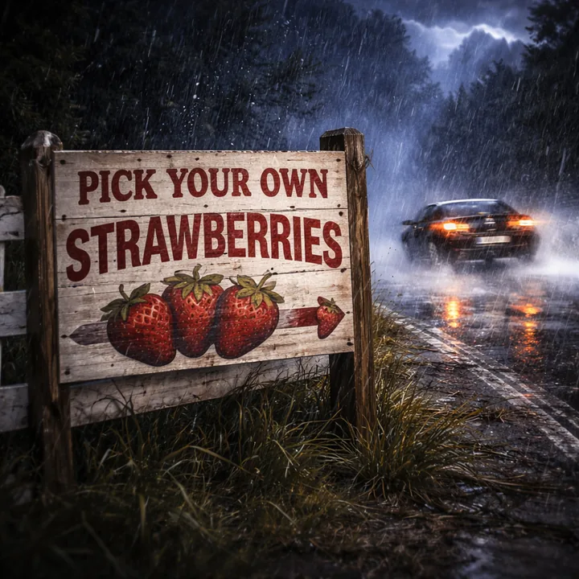Grover drops the next bomb: those “old ladies” were the Fates, and seeing them means a life is about to be cut short. Percy realizes the warning was meant for him, and the argument turns sharp until Sally snaps at both of them to focus.
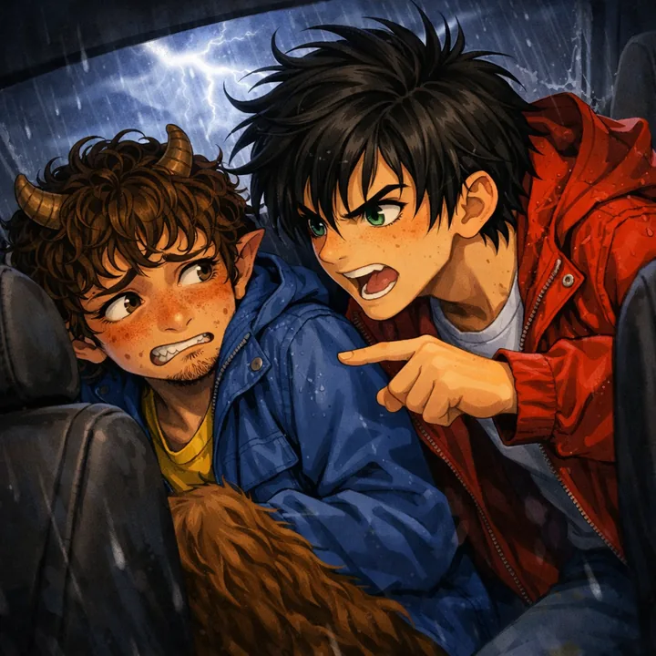Sally swerves hard to avoid a dark fluttering figure in the road, but she refuses to explain what it was. Percy’s dread spikes—then a blinding flash and a thunderclap hit like a hammer, and the car is suddenly out of control.
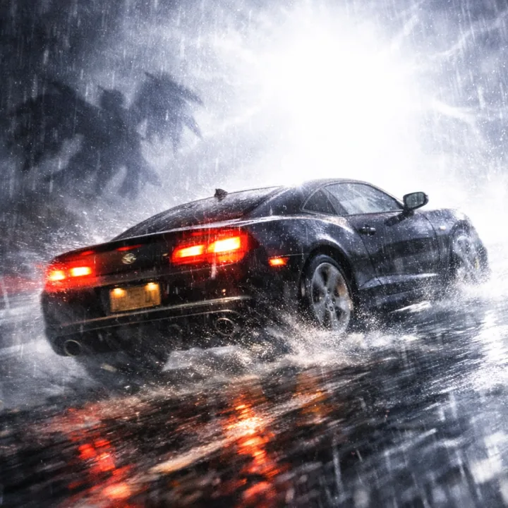Percy comes to with rain pouring through a cracked-open roof, the Camaro wedged in a ditch. Grover is slumped and bleeding, barely conscious, and Percy shakes him in panic until Grover groans one word—“Food”—like that’s his emergency plan.
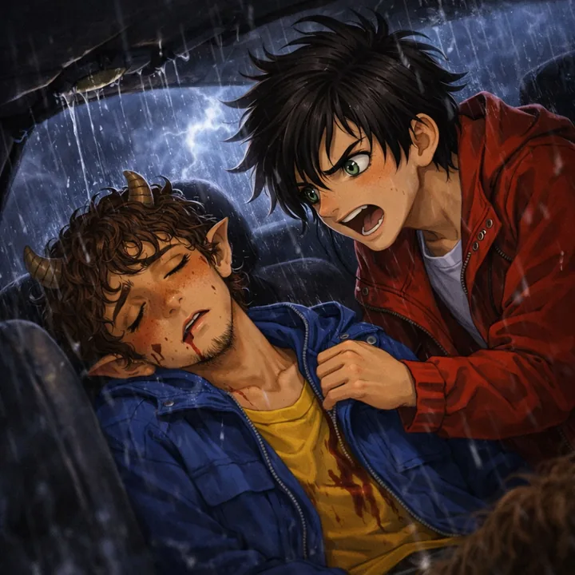